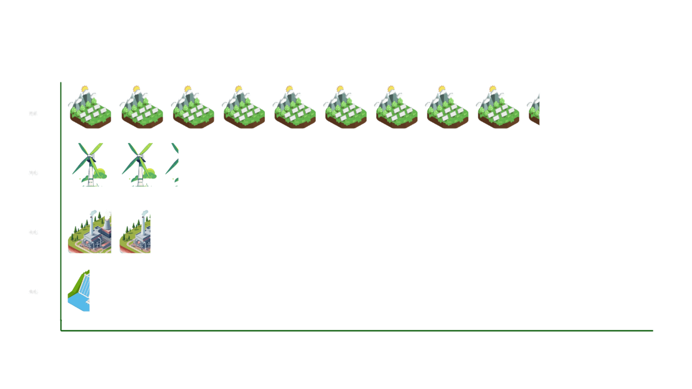
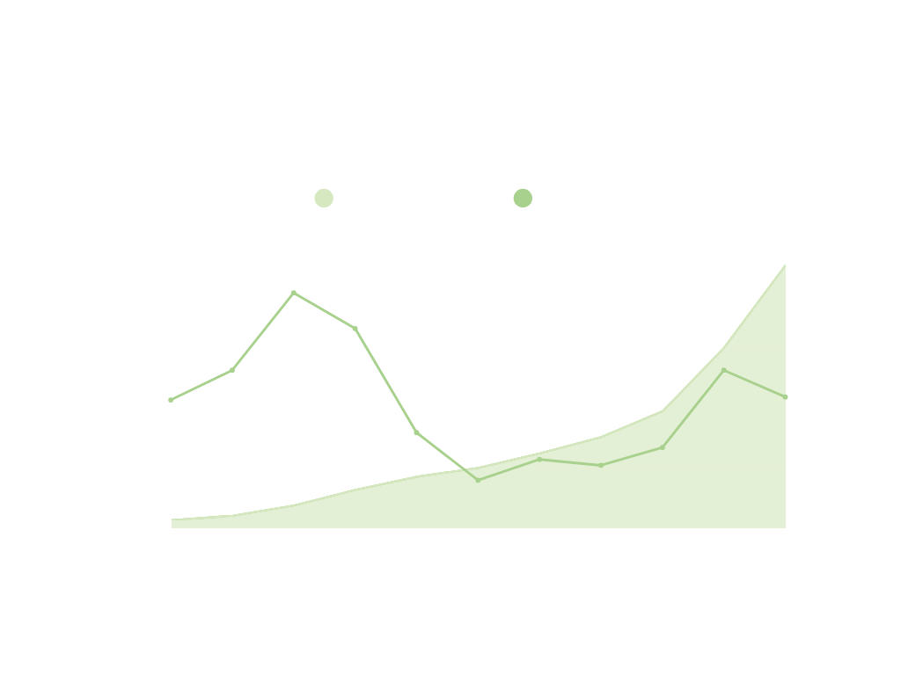

尽管火力发电依旧占主导地位，但中国新能源发展迅速，年均保持两位数的增长率。提前6年多完成中国在气候雄心大会上承诺的"到2030年中国风电、太阳能发电总装机容量达到12亿千瓦时以上"的目标。
在2024年新增装机总量中，光伏装机一骑绝尘，占比高达64.7%，稳居第一位。传统能源装机进一步收缩，火电新增装机占比降至12.6%。
PHOTOVOLTAIC DEVELOPMENT ACHIEVEMENTS
尽管火力发电依旧占主导地位，但中国新能源发展迅速，年均保持两位数的增长率。提前6年多完成中国在气候雄心大会上承诺的"到2030年中国风电、太阳能发电总装机容量达到12亿千瓦时以上"的目标。
在2024年新增装机总量中，光伏装机一骑绝尘，占比高达64.7%，稳居第一位。传统能源装机进一步收缩，火电新增装机占比降至12.6%。

截至2024年底，中国光伏装机总容量突破8.4亿千瓦，与2013年相比，装机量增长180多倍，年均增长约60%，年新增和累计装机容量均位列全球第一。
2025年6月24日，中国光伏发电累计装机规模突破10亿千瓦，占中国总发电装机容量的比重达30%，推动新能源迈上新台阶。

从中国光伏区域发展看，在2024年各省新增装机容量中，新疆、内蒙、江苏三省增量显著，新增光伏规模均超过2000万千瓦，占总新增规模1/3。
呈现出"东部提质、中部扩容、西部提速"的鲜明特征。
鼠标放在地图上滚动滑轮可以放大地图
2024年，中国太阳能发电量达到1800亿千瓦时，同比增长约20%，成为仅次于水电的第二大清洁能源发电来源。
如今10亿千瓦以上的光伏装机一年可发出1.2万亿千瓦时的绿色清洁电能，可直接替代1.52亿吨的原油进口（约占2024年原油进口量的18%），让中国向实现能源自主迈进，减少全球能源安全危机对我国的影响。
中国光伏发电量不断增加，在全部发电量中的占比稳步提高，同时，光伏发电利用率平均保持在95%以上，处于世界一流水平，真正做到让光伏发的电造福于民。
2024年，中国光伏利用率达到96.8%，其中上海、浙江、福建、重庆、四个省的光伏利用率高达100%。
